Shuhao Li's Features
Feature 1: Image as Textures (5 pts)
Related files: image.h, image.cpp, imagetexture.cpp
Time Spent: 1 hr
I created an Image class for this and other features like bump mapping and environment emitter. This class is capable of reading and doing bilinear interpolation in the image. With the help of the interpolation method, I can use the uv coordinate of the hit point directly for querying pixel colors in the image.
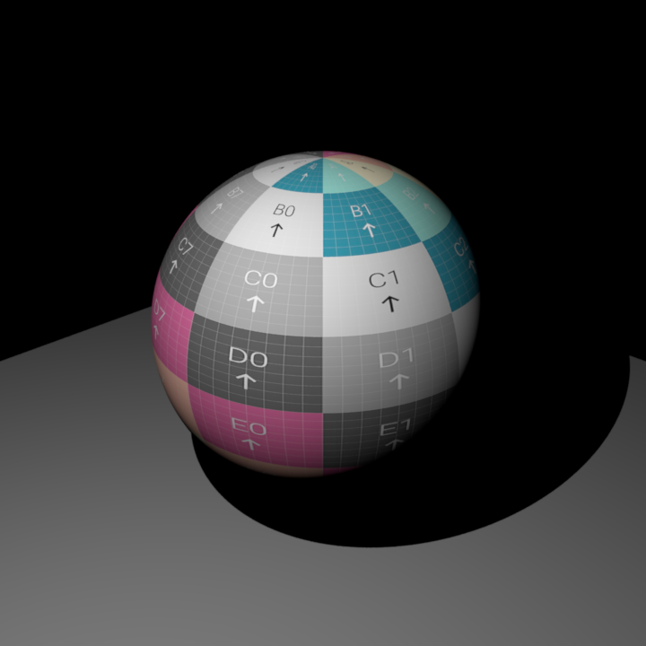Texture tiling also got implemented.
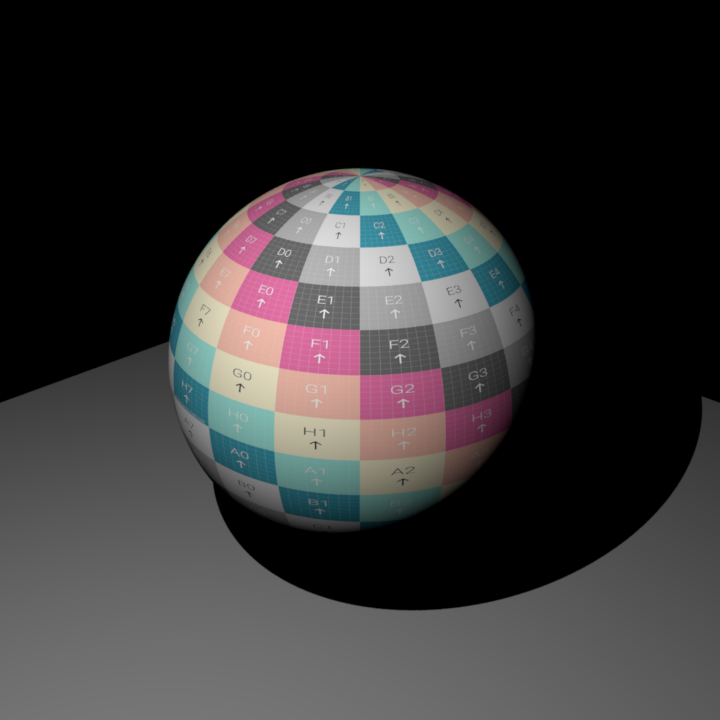Feature 2: Textured Area Emitters (5 pts)
Related files: emitter.h, arealight.cpp, quad.cpp, d2ddist.h, d2ddist.cpp, image.h, image.cpp
Time Spent: 1 hr
An area emitter can be textured by adding a texture image to the emitter, and use the image value at the hitted or sampled point as the radiance of the emitter. To make the brightness of the emitter be easily adjustable in the texture mode, the first element of the "radiance" property is used to control the overall brightness of the texture image.
Importance sampling of the area emitter is implemented on the quad shape only. A Discrete2DDistribution class was created for the warping and pdf computing routine in importance sampling. To enable importance sampling for quad emitters, a "importance_file" needs to be provided to the quad shape, which in most cases should just be the texture image of the emitter itself.
Points on the quad will gets sampled according to the luminance of the reference importance image. If the image is identical to the texture of the emitter, the distribution of the sampled points on the quad should mataches the brightness level of the texture image. The benefit of doing importance sampling in this way is that we can provide a low-resolution version of the texture image as the importance reference, which can significantly reduce the computational cost of importance sampling while the texture remains sharp. The effectiveness of this technique will be further demonstrated in the environment emitter section.
The following scenes are both rendered by path_mis integrator with 5 samples. The one on the right is rendered with importance sampling enabled while the one on the left is not. We can clearly see that due to the sparsity of the emitting area on the quad, image rendered with out importance sampling did not get many valid samples in the image.
Feature 3: Bump mapping (5 pts)
Related files: mesh.cpp, mesh.h, obj.cpp, sphere.cpp, quad.cpp
Time Spent: 3 hr
The bump mapping chapter of the pbrt book was pretty helpful when I was implementing this feature. Bump mapping was implemented for general mesh, sphere and quad. The bumpiness of the bump mapping can be controled via the level parameter of the shape.
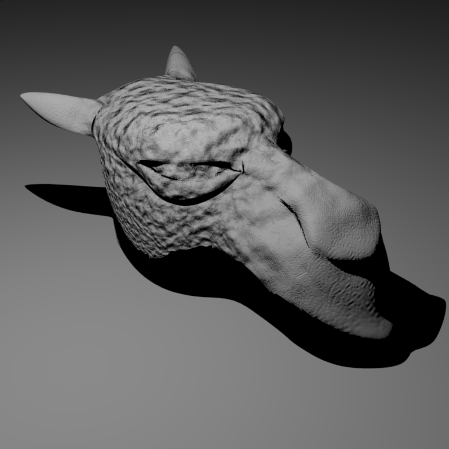Feature 4: Environment Emitter (15 pts)
Related files: envlight.cpp, d2ddist.h, d2ddist.cpp, image.h, image.cpp
Time Spent: 6 hr
The environment emitter was implemented as an infinite shape and an area emitter combined together. The rayIntersect method of the shape will always return true when the maxt of the ray equals to infinity. The Discrete2DDistribution class was actually implemented when completing this task as I did this before the textured emitter feature. Importance sampling for environment emitter was implemented according to the method proposed in the letter slide. Using low resolution version of the texture image as importance sampling reference is also supported.
To demonstrate the effectiveness of importance sampling, following scenes are rendered with and without importance sampling. The chosen environment emitter is simply a small white dot on the north pole of the sky ball.
For environment emitter with finner detail levels, using a low resolution of the texture image as importance sampling reference can greatly speed up the rendering speed while preserving the sharpness of the environment map.
")
Following scenes are all rendered with path_mis integrator with 5 samples.
Church scene rendered with path_mis integrator with 64 samples.
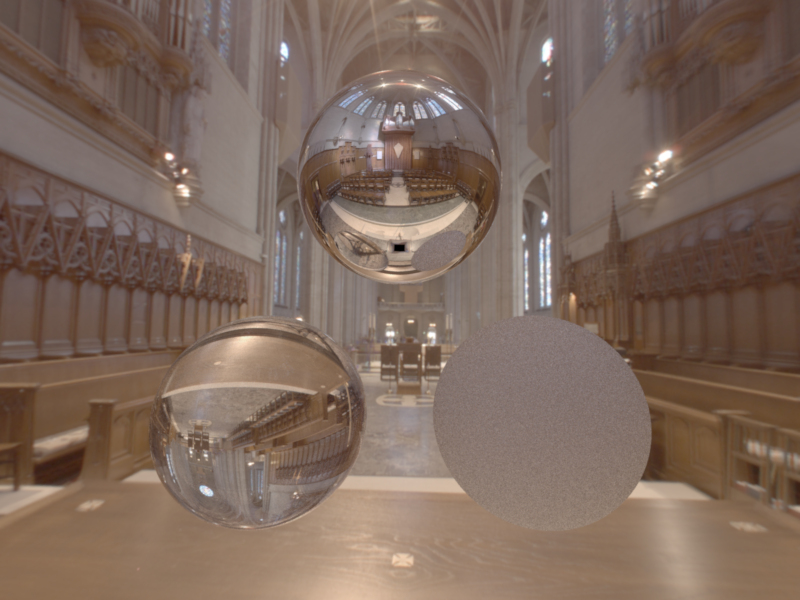Feature 5: Path Guiding (Practical Path Guiding for Efficient Light-Transport Simulation) (30 pts)
Related files: render.cpp, path_guiding_mis.cpp, integrator.h, sdtree.h, sdtree.cpp
Time Spent: 20 hr
Spatial Directional Tree (SDTree)
The SDTree data structure described in the paper is implemented as a SDTree class. For performance consideration, all routines that will be used in the Li method of the integrator are implemented with loops only. The localToWorld and worldToLocal method defined in sdtree.h defines the transformation between the 2D coordinate in the Directional Quadtree and the direction in the world coordinate. These transformation routine was implemented in an area-preserving fashion as described in the paper. In other words, two equal-area regions in the directional quadtree indicates two regions with the same solid angle on the direction sphere.
Integrator
For the clearness of the implementation, the integrator was implemented in a recursive fashion. In order to prevent stack overflowing (which did happened once when I was debugging it), the maximum kill probability used for russian roullete is described as a function corresponding to the recursion depth. The deeper the recursion level is, the lower the chance for the integrator to trace new rays. The use of such maximum kill probability can cut the long tail of the regular geometric distribution (distribution of the maximum recursion depth when the maximum kill probability is a constant), while the distribution of the maximum recursion depth can be controled by the parameters in the function.
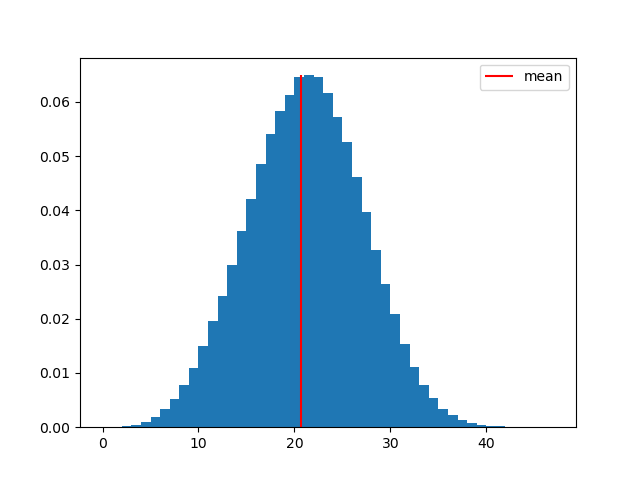Path guiding can only deal with "hittable" light sources. For unhittable emitters light point light, it is impossible for path guiding method to generate a ray that can hit a single point in the space. Therefore, to improve the compatibility of the integrator with such emitters, an additional emitter sampling procedure that only samples those "unhittable" emitters is implemented in the integrator.
To show the integrator is unbiased, I ran the tests from assignments and passed all of them.
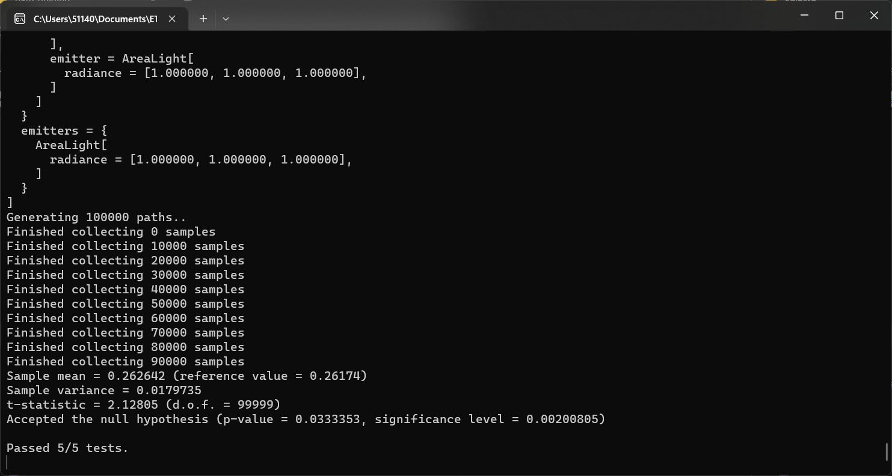 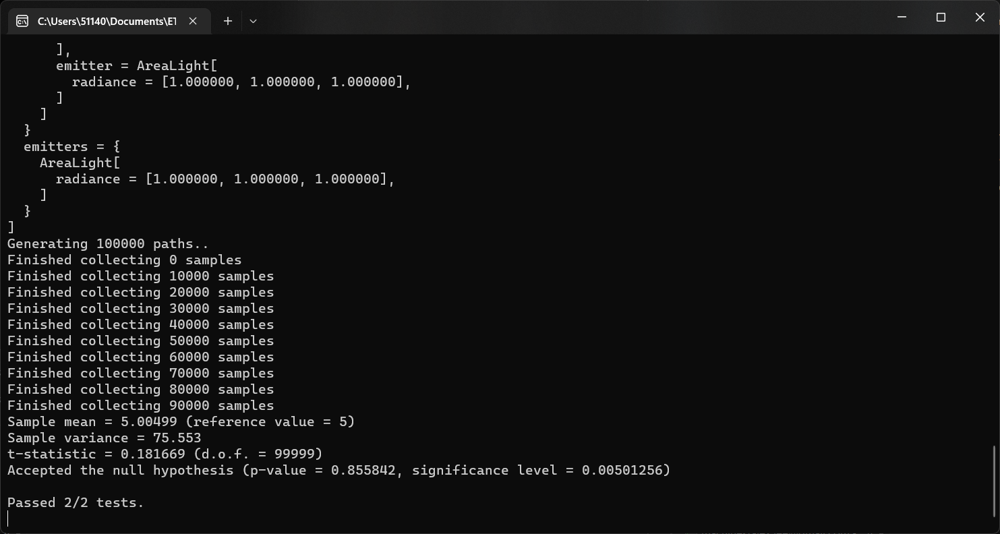Following are the cornell box scene rendered with path_guiding_mis and path_mats integrator. As path guiding algorithm get its knowledge from BSDF sampling, comparing it against pure BSDF sampling make more sense than comparing against path_mis integrator, which also use emitter sampling.
We can see that path guiding indeed helped to reduce image noise by a lot.
Current issue regarding to Euler: The gcc compiler on Euler does not have a usable atomic library support. Therefore, I used mutex lock around all criticle variable update in the sdtree in the current version of code. The mutex lock slows the performance of the path guiding integrator by a lot.
All combined
A simple scene that combines almost every features that I have implemented, except importance sampling for emitters, as it is not supported by path guiding.
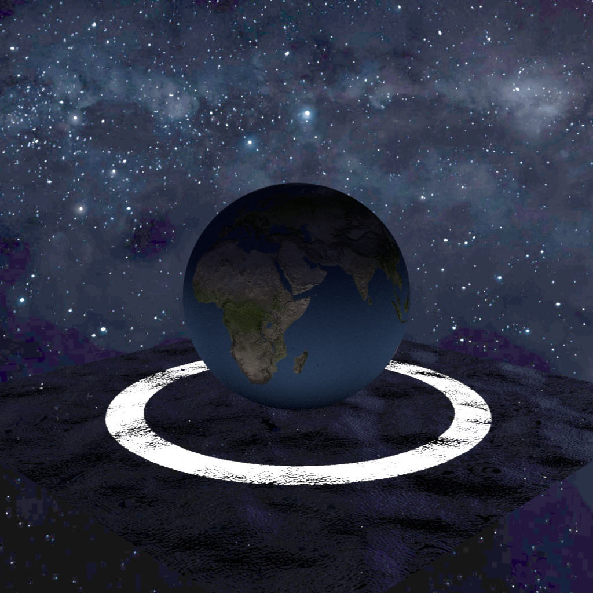Zeren Jiang's Features
Feature 1: Spotlight (5 pts)
Related files: spotlight.cpp
Time Spent: 3 hr
I created an SpotLight class which inherited from Emitter. I implement this feature by using PBRT book as a reference. The class contain 5 parameters, light position, light radiance, light direction, cosTotalWidth and cosFalloffStart. The light radiance is constant with cosFalloffStart angle and generally reduce to zero from cosFalloffStart to cosTotalWidth. For validation, I use mitsuba as a reference. The parameter is the same with cosTotalWidth=20, cosFalloffStart=20, radiance=15. For a better comparison, I add global homogeneous medium into the rendered scene.
Feature 2: Rendering with Euler (5 pts)
Related files: main.cpp
Time Spent: 2 hr
I closed the GUI of the nori, to render it on Euler. The following are some instruction for rendering on euler. You need to first load newest version of gcc and cmake to compile the source code.
module load gcc/4.8.5 cmake/3.4.3
Then following the instruction on README.md to compile the code. In the end, run the following command:
./nori <path_to_your_xml> nogui
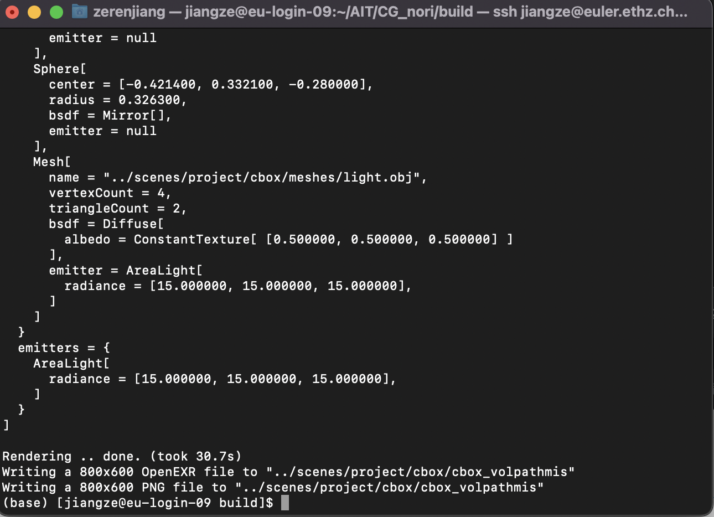 Feature 3: Modeling Meshes (5 pts)
Related files: *.obj
Time Spent: 3 hr
I use blender to model human meshes with different poses based on SMPL-X adds-on.
./nori <path_to_your_xml> nogui
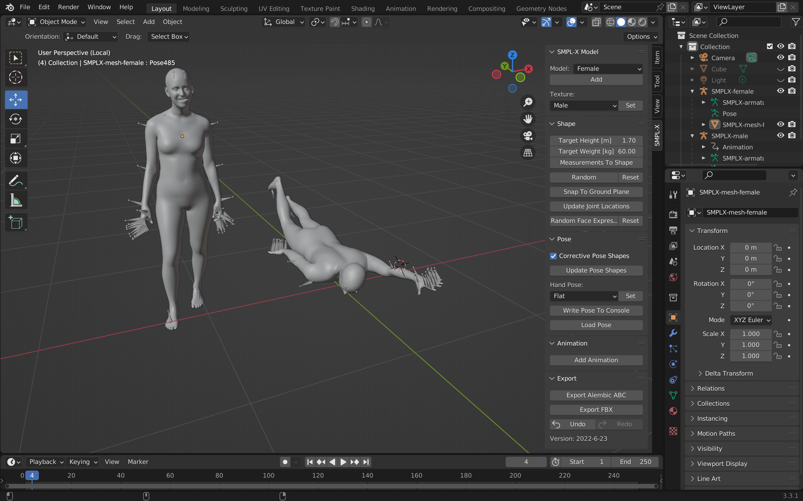 Feature 4: Homogeneous Volumatric Path Tracing (15 pts)
Related files: medium.h phase.h scene.h isotropic.cpp medium.cpp scene.cpp volpathmis.cpp
Time Spent: 24 hr
I created an Medium class to create medium and implement free path sampling algorithm. The shape of the medium is a cube. The size and the location of the cube can be specified by the dimensions and origin label in XML file. Also the density of the medium can be specified by sigma_a and sigma_s label.
Plus, the Phase class is the parent class of all kinds of phase function. I implement a isotropic phase function for sampling.
The volpathmis.cpp is a Volumatric Path Tracing integrator with importance sampling. It first detect if the ray will hit on the medium and if it is the case, we will perform free path sampling and phase function sampling to generate the next ray. If the ray do not hit on the medium or after free path sampling, it hit on a surface, than the intergrator will sample the BRDF of the surface just like path MIS intergrator that we implemented in the assignment.
Feature 5: Advanced Camera (15 pts)
Related files: camera.h perspective.cpp render.cpp
Time Spent: 12 hr
Depth of Field
Two parameters Len Radius and Focal distance can be adjusted for a thin len camera. Specifically, a point will be sampled on the lens based on the lens radius and the new camera ray will be generated with the sampled point as the origin and the point (passed by the original camera ray) on the focal plane as the target direction.
Len Radius = 0.3, Focal Distance = 5.13Lens distortion
For camera calibration, r' = r + k_1 * r^3 + k_2 * r^5 here r is the distance between the principal point to the observed point, and r' is the calibrated distance. However, we need to perform a invert camera calibration to simulate the lens distortion. Here I use Newton method to optimize the unknown observed point. The distortion factor K1, K2 are two parameters.
Chromatic Aberrations
For chromatic Aberrations, I sample 3 ray for each color channel and shift the point on the nearP plane base on the different color channel. The shifted weight is a user specific parameter, which can be set in XML using waveweight label. Also, don't forget to enable this feature using chromatic_aberration label.
Feature 6: Disney BSDF (15 pts)
Related files: disney_bsdf.cpp, warp.h, warp.cpp, warptest.cpp
Time Spent: 16 hr
I have implemented 5 parameters: specular, specularTint, roughness, metallic, subsurface. Those parameters can be seperated into two lobes: the diffuse lobe captures the base diffusive color of the surface, and the metallic lobe that features major specular highlights.
The diffuse lobe are controled by roughness and subsurface parameter. The diffused color is based on Schlick Fresnel approximation and the subsurface scattering are modeled by Lommel-Seeliger law. Then those two terms are linearly combined by the subsurface parameter.
The metallic lobe are controled by metallic, specular, roughness and specularTint parameter. The specular reflection is based on Cook-Torrance microfacet BRDF. The normal vector distribution is a GTR2 distribution. The occlusion factor is derived from SmithGGX model. To make the specular reflection color close to the material color, a specularTint parameter is introduced, which replace the base color with the tint Color in the Fresnel term.
As for the sampling, the wo ray are sampled from the diffuse and metallic lobe, based on the metallic parameter. For diffuse lobe, the wo ray is sampled from CosineHemisphere and for metallic lobe it is sampled from GTR2.
For validation, I adjust one parameter each time and set the other parameter to 0.5.
metallic
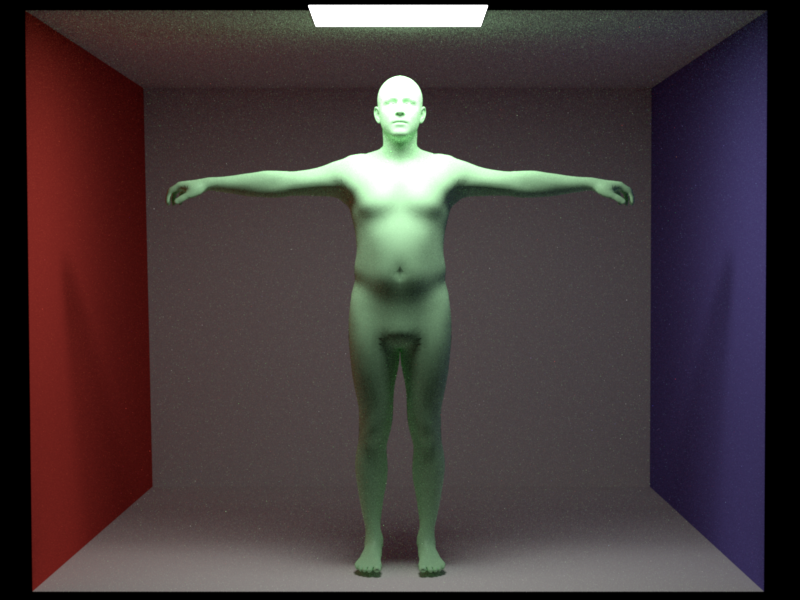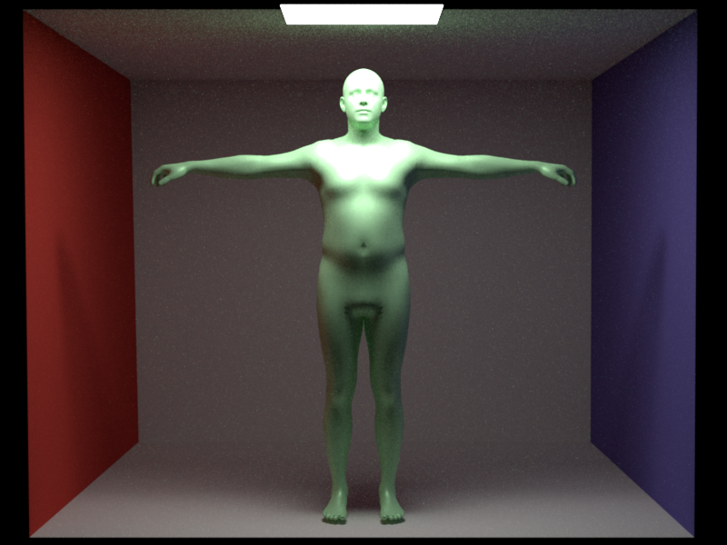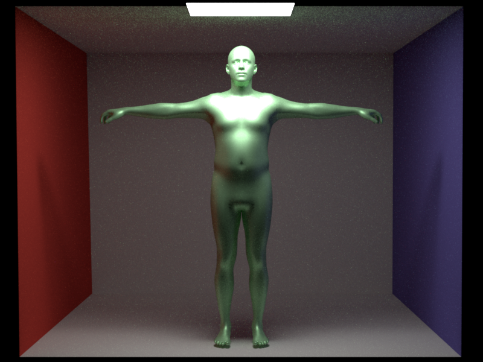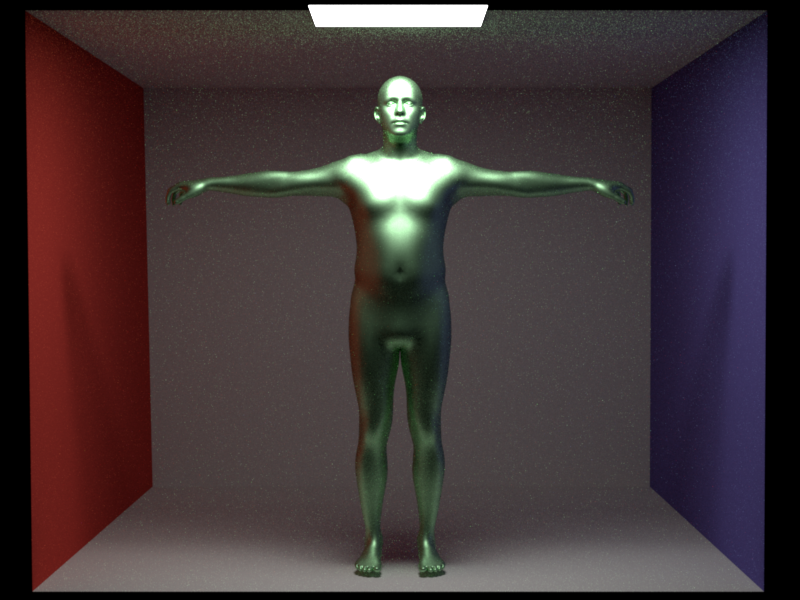
0 0.3 0.7 1
specular
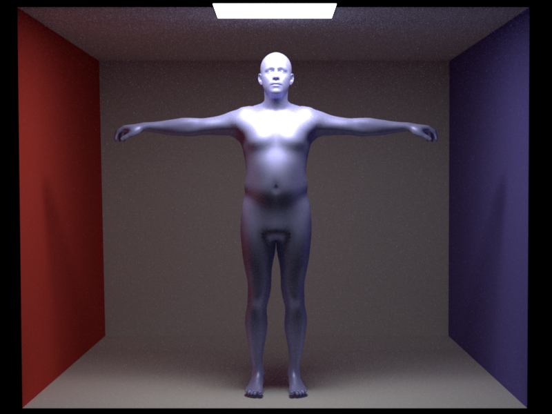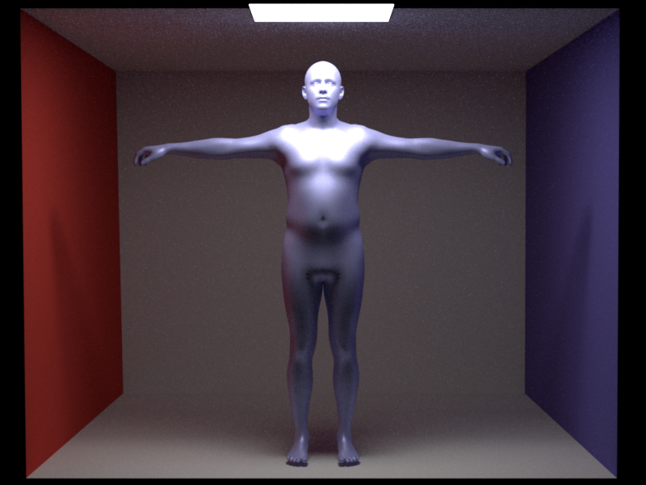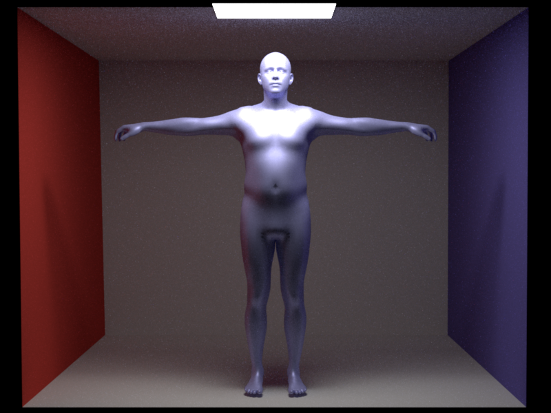
0 0.3 0.7 1
specularTint
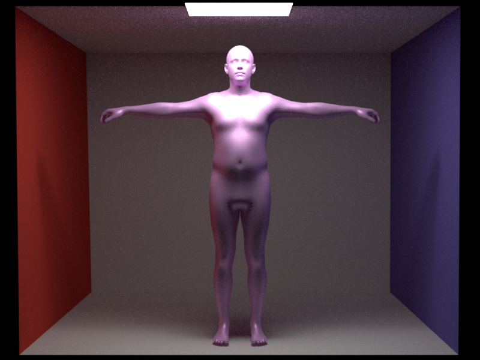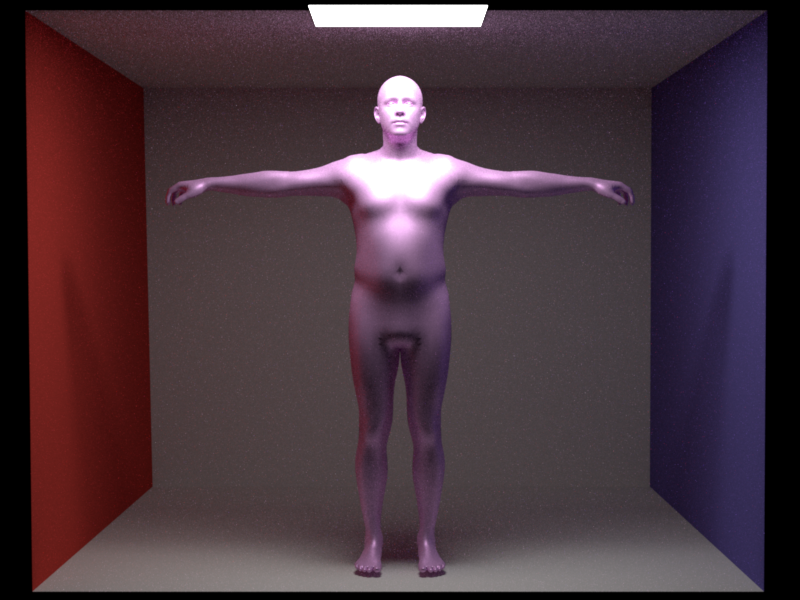
0 0.3 0.7 1
roughness
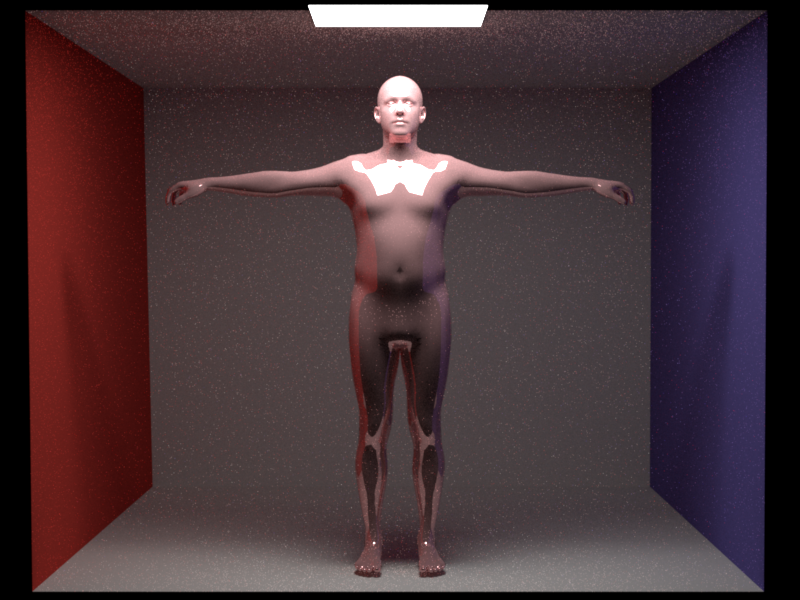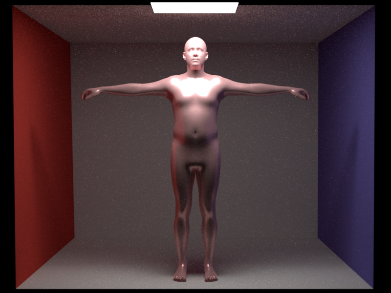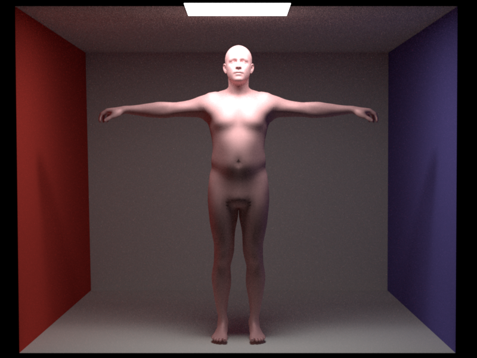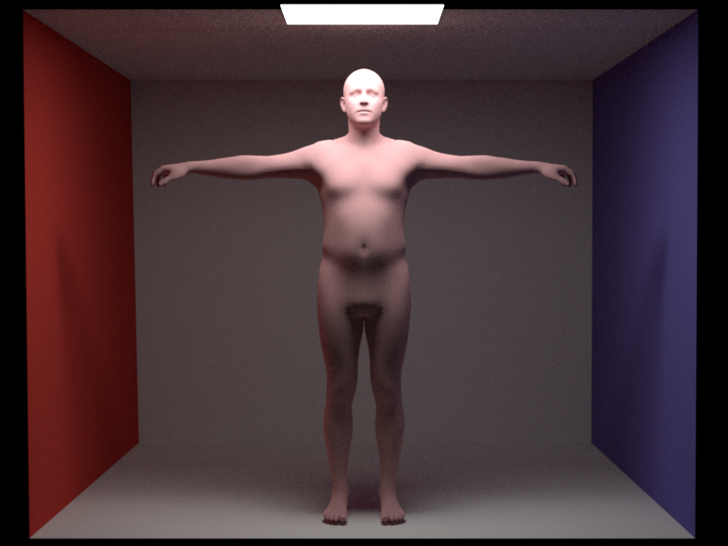
0 0.3 0.7 1
subsurface
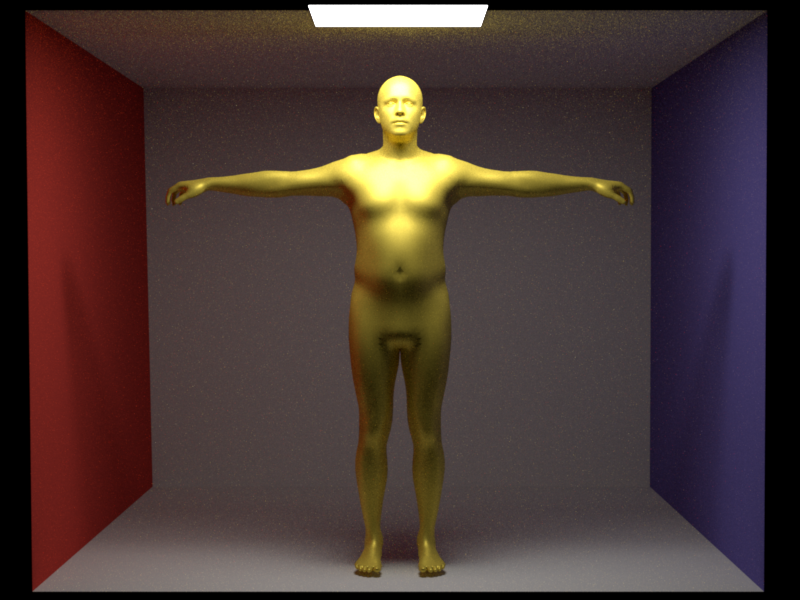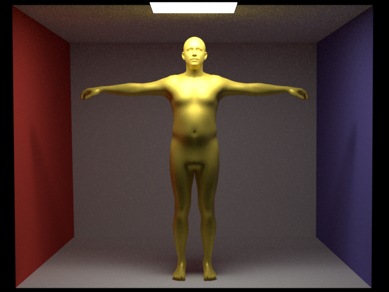
0 0.3 0.7 1
For clarify, I compare some imperceptible parameter side by side.
specularIn addition, I change the warptest to test the squaretoGTR2 function.
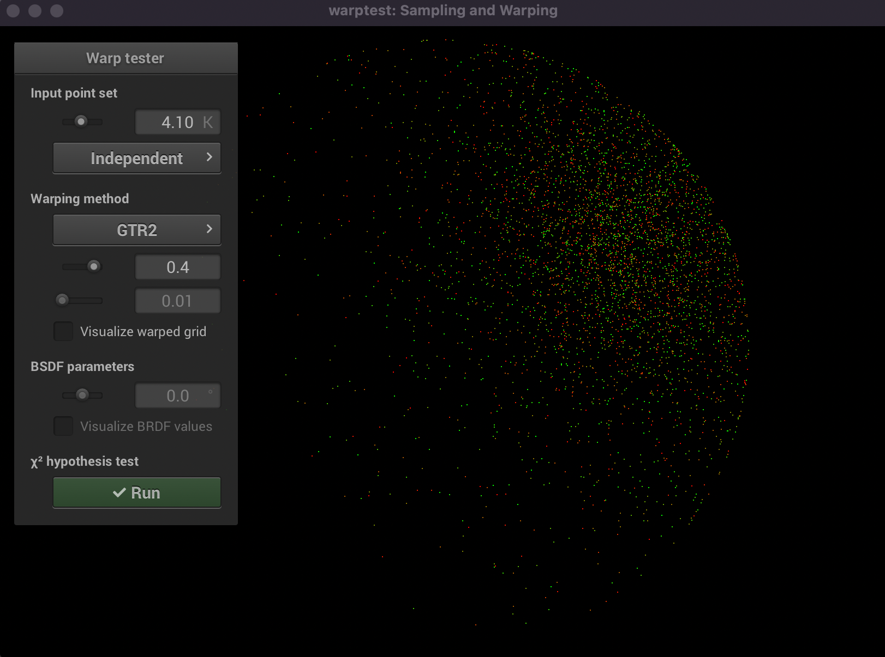 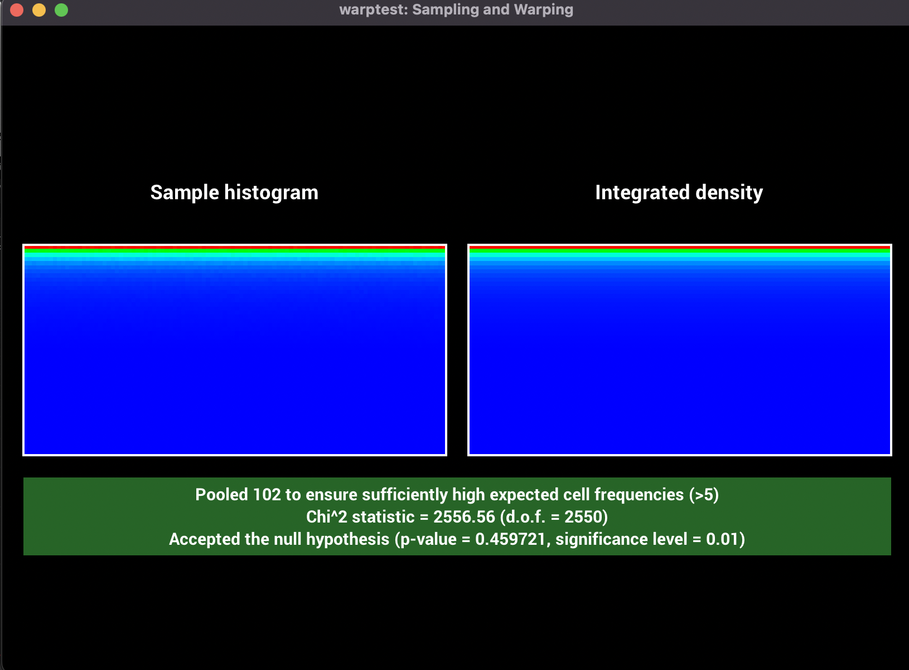